Wu YouEn
No. 6, Aly. 121, Bianxing Ln., Xuetian Rd., Wuri Dist., Taichung City 414, Taiwan (R.O.C.)
(886)0968617968 ·
jimmy8399@live.com
您好，我叫做吳侑恩，畢業於嶺東科大數位媒體設計系，自己較專長的方面屬於平面美編設計類。 我對自己的作品要求完美，對於細節更是斤斤計較，因此我的作品都是無非都是經過不斷的思考設計而完成，每個細節我都會要求達到對自我得標準。 但相形之下的問題在於可能會造成設計時間太久，或者造成團隊上的壓力，有鑒於此，我也不斷的改善自己設計的技巧，讓作品能更快速呈現出來， 以及提升自己與人溝通的技巧，讓我與團隊間能更有效率的達成共識
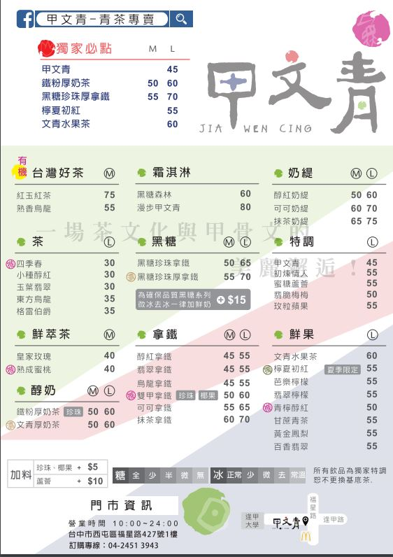 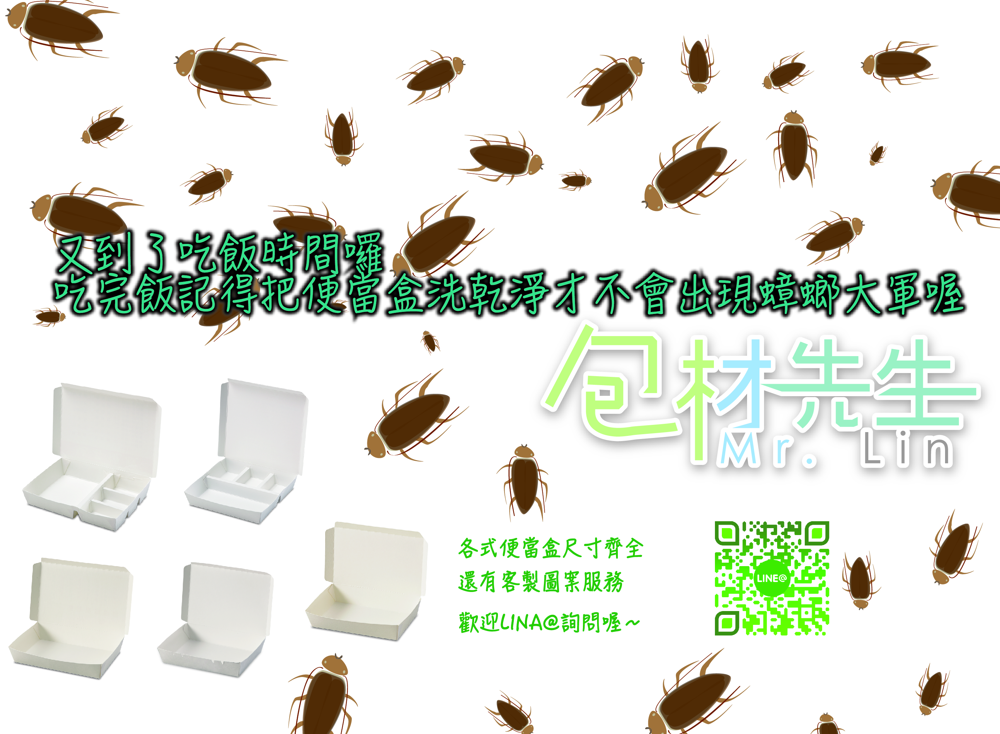
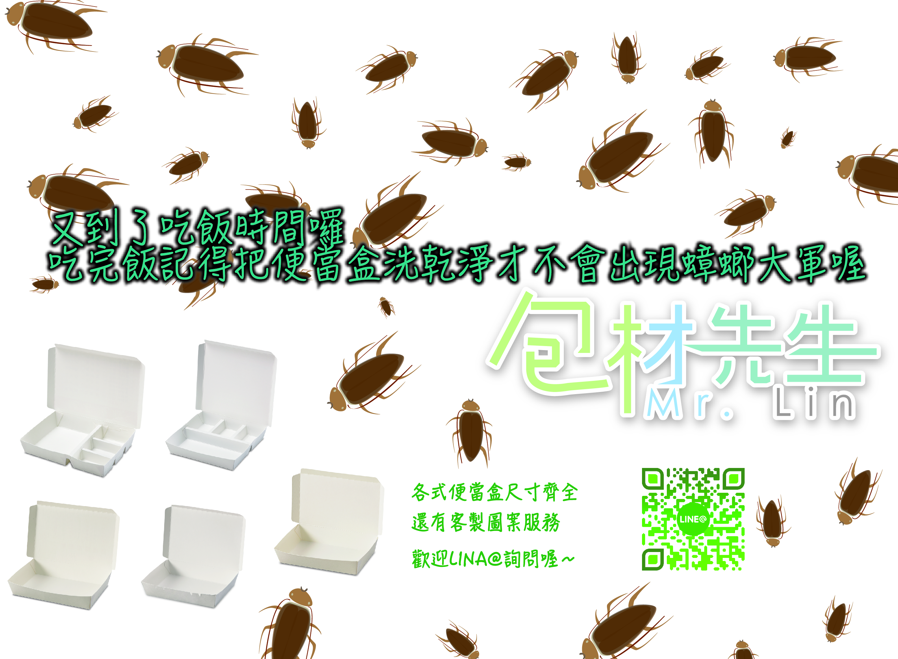
Experience
包材先生
美編設計人員
食品包裝設計，公司創始LOGO圖案設計，公司臉書粉絲專業管理，公司招牌設計，公司門牌地圖設計，LINE@管理，等等相關美編庶務。
很榮幸可以參與包材先生的創始過程，當時面試時老闆娘和我說如果有機會我就是這個部門的創始員工，
也很榮幸我當初幫忙發想設計的所有東西都有讓老闆應用到門市的布置，大到LOGO或是門牌還有小地圖，小至網拍平台上的商品圖樣本。
 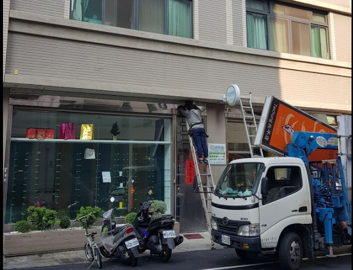
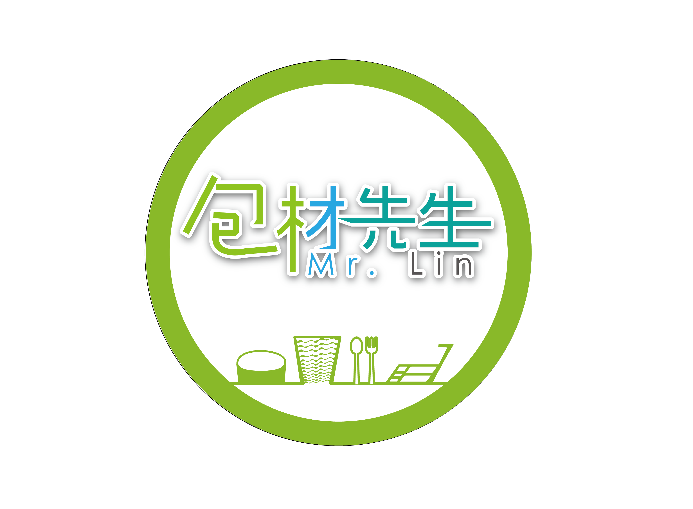
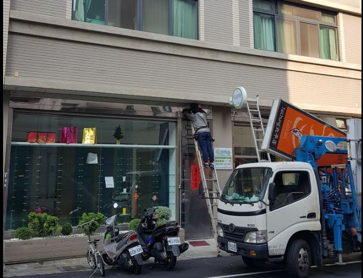
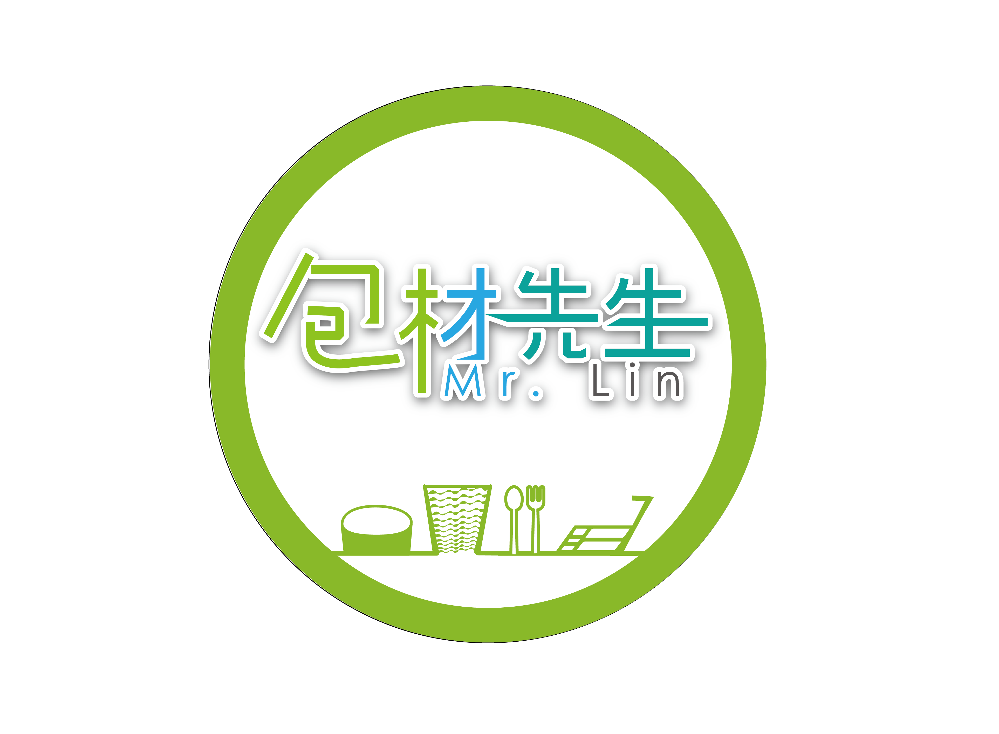 

March 2018 - November 2018
麥當勞
餐服人員，外送人員
櫃台點餐服務人員，送餐人員，外送人員
June 2012 - December 2016
清新溫泉飯店美工
美工工讀生
協助清新溫泉飯店設計部門正職同仁一些美工相關事務，大廳跑馬燈改圖、餐廳菜卡內如更新、
January 2016 - april 2016
Education
嶺東科技大學
數位媒體設計系
相關數位媒體設計應用學程
畢業
August 2013 - June 2017
慈明高中
廣告設計科
畢業
September 2010 - May 2013
Skills
多媒體應用軟體 & 工具


Workflow
-
當我在做美編設計時最主要的軟體就是illastrator還有Photoshop，這兩款軟體我的使用習慣是互相搭配，並沒有說偏重哪個，而是取決於作品的表現方式還有效果來定。
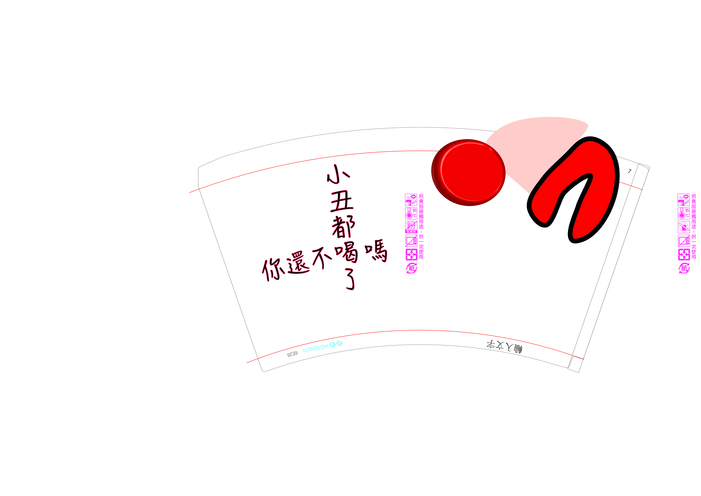 -
自己因為興趣，也有研究過音樂編曲軟體，像是比較主流的Logicprox還有水果flstudios，用來製作電子音樂，或是一些音效，影片開頭都很不錯的。
-
對於自己喜歡的興趣，我會希望他能帶給我不管是實質上的利益，或是給自己多一點的才華，所以會深入研究，那像是音樂編曲，我也有利用在大學的製作上，負責影片的背景音樂，另外我也喜歡運動健身，所以自己也有考取了一張運動指導員證照還有急救術。
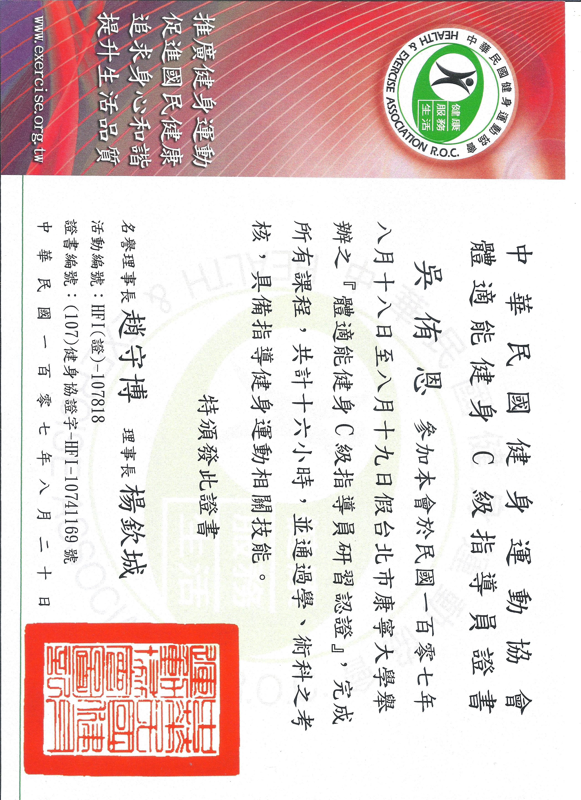 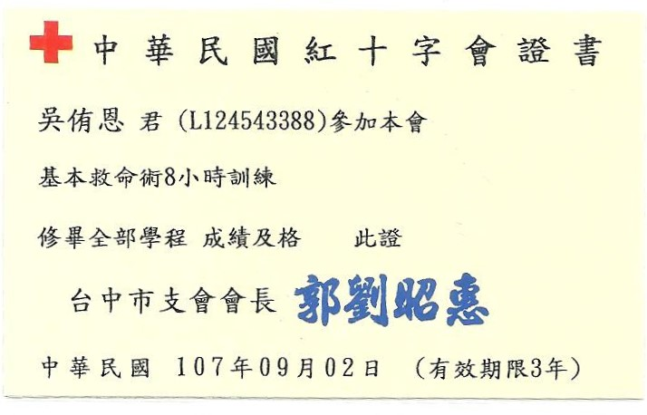
 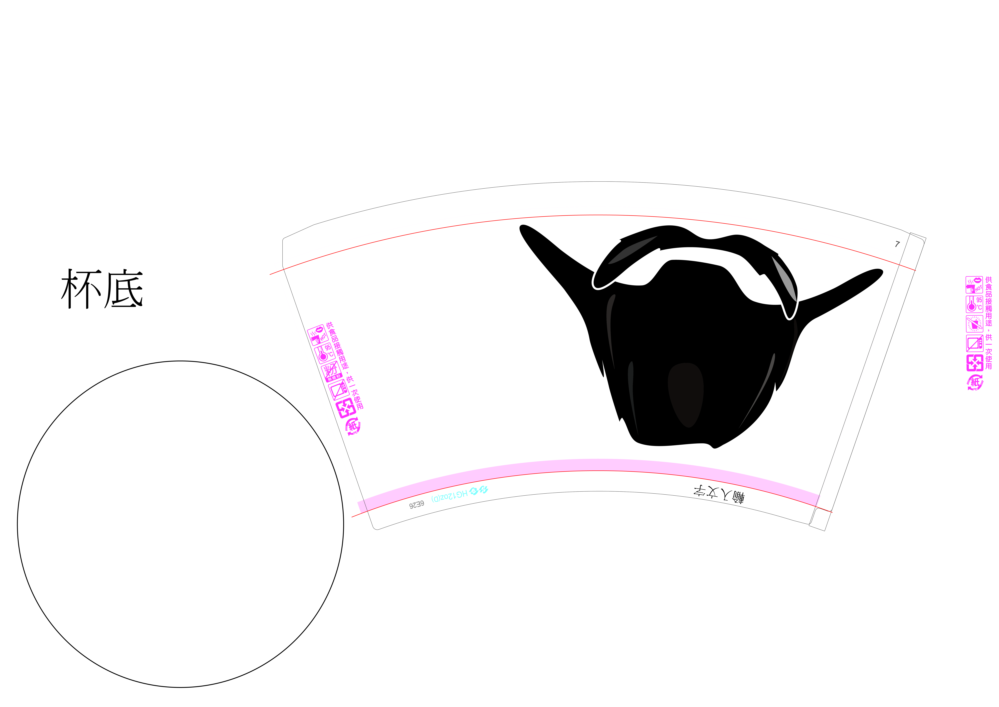 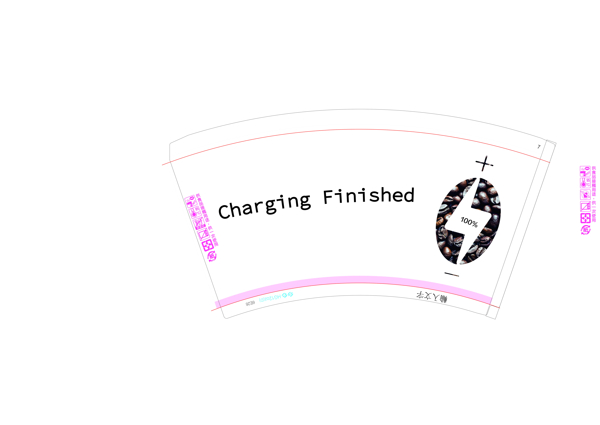
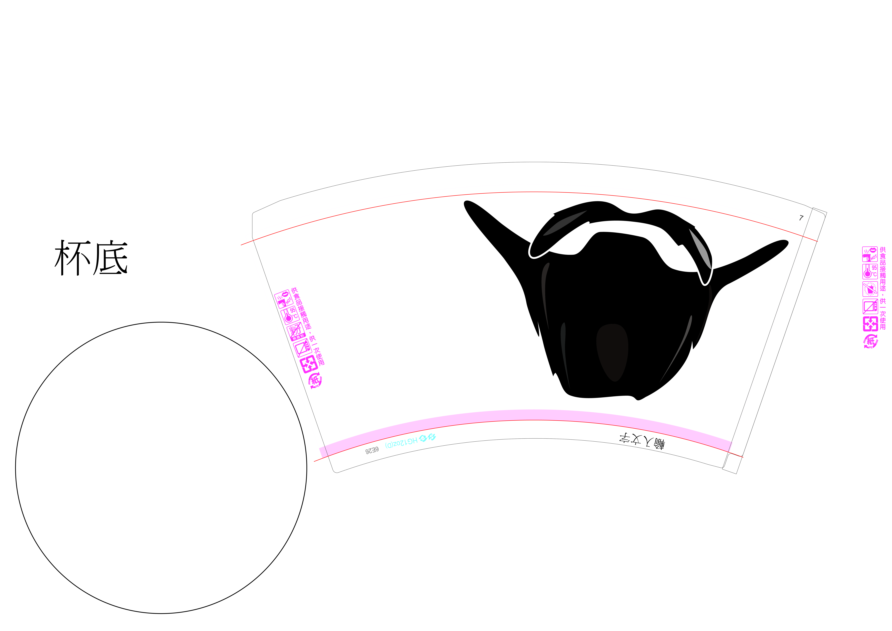 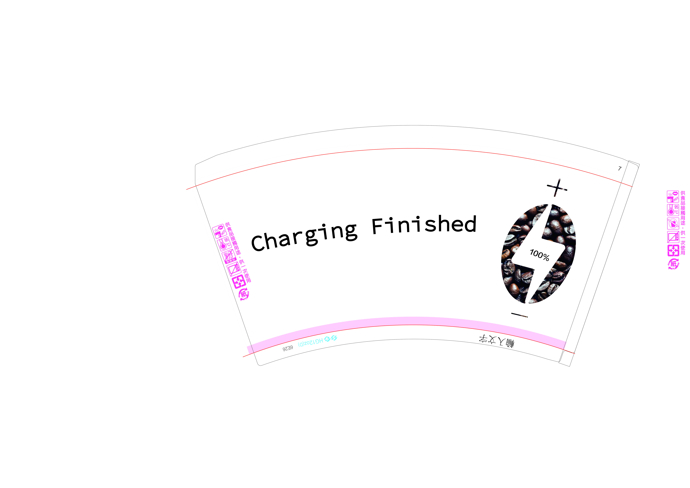